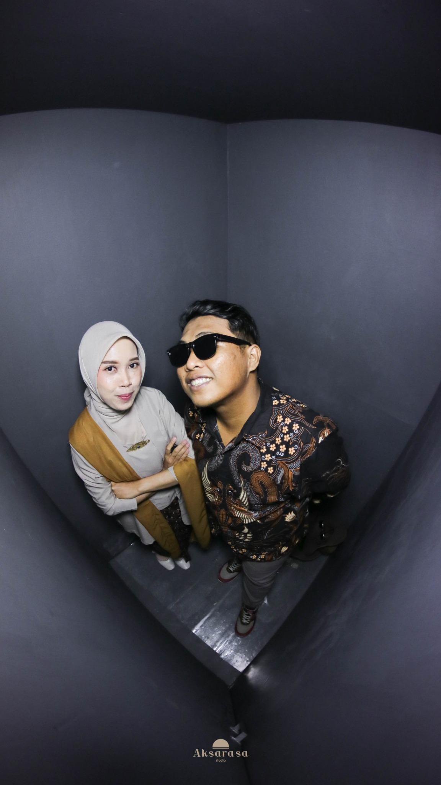
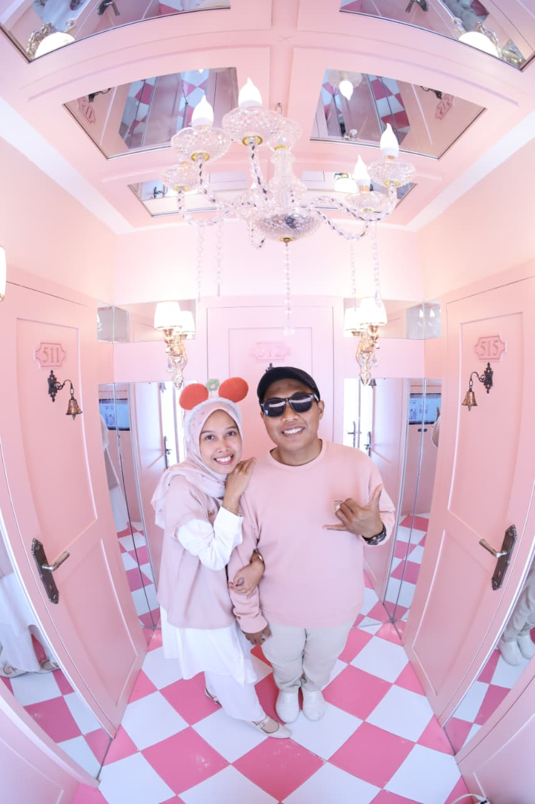
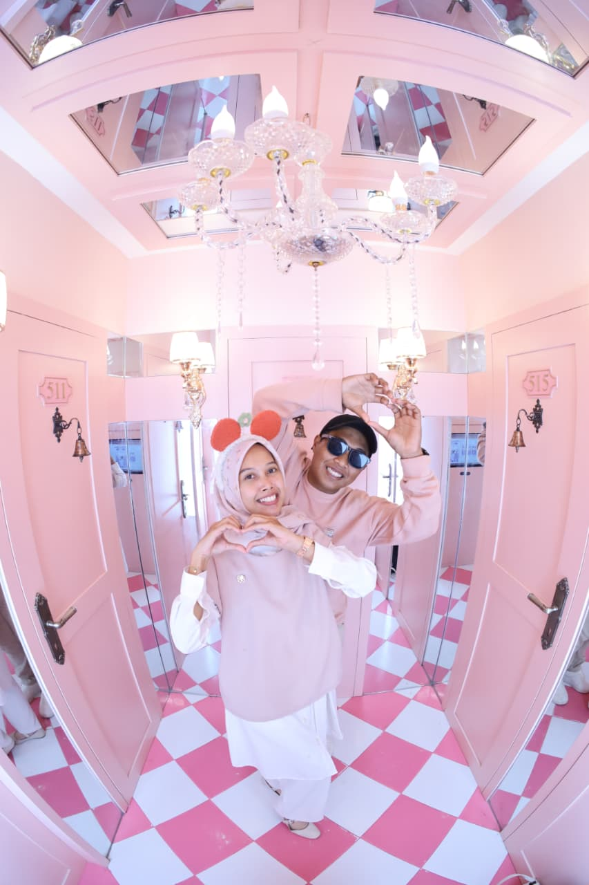
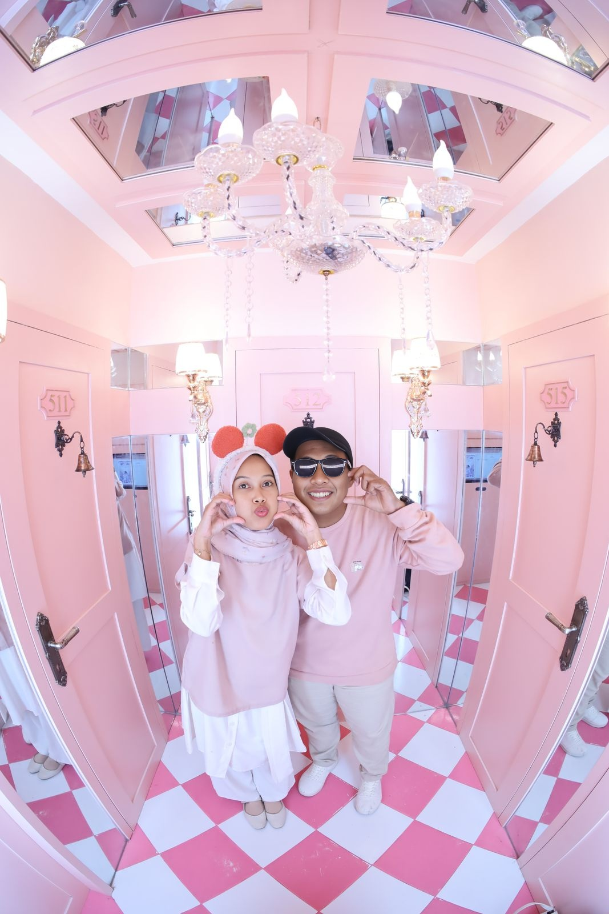
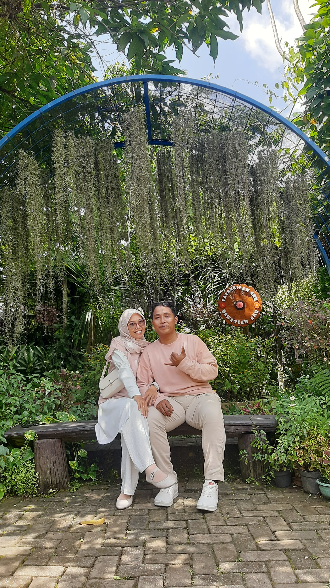
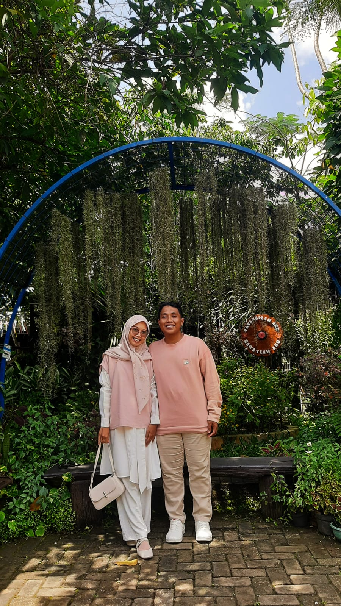

Dengan penuh kebahagiaan
Dengan memohon rahmat dan ridho Tuhan Yang Maha Esa, kami mengundang Bapak/Ibu/Saudara/i untuk hadir di hari bahagia kami.

Countdown
Kisah Cinta
Berawal dari sebuah perkenalan, tumbuh menjadi rasa, dan kini kami melangkah bersama menuju kehidupan baru.
Galeri





Upload foto1.jpg sampai foto6.jpg ke GitHub.
Detail Acara
Musik
RSVP & Ucapan
Bagikan Undangan
Zaky & Agnes ❤️
Terima kasih atas doa dan kehadiran Anda.